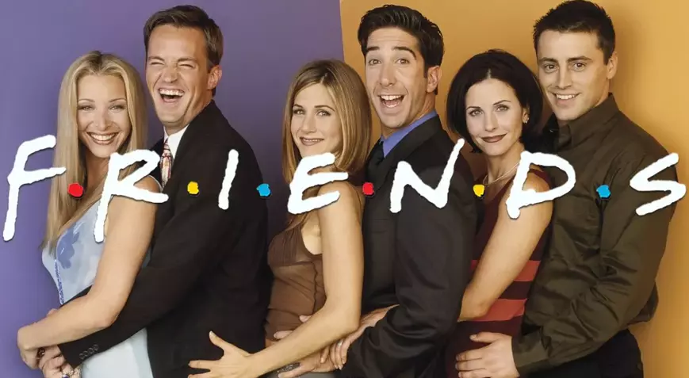
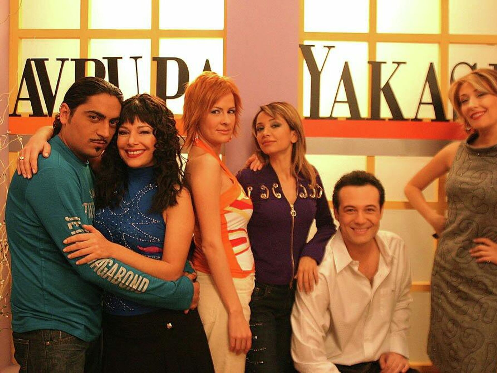
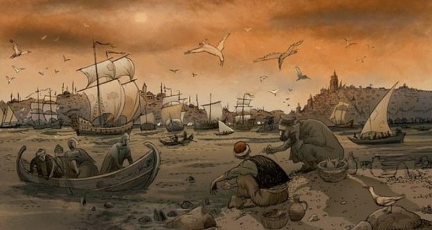
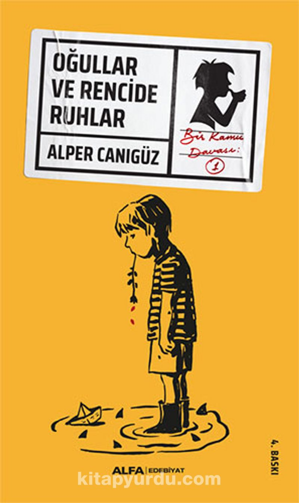

MELEK SAV
Hakkımda
Merhaba ben Melek Sav. Muğla'da yaşıyorum.Web geliştirme ile ilgileniyorum.
Kodluyoruz'un bu içeriği sayesinde harika şeyler öğreniyorum.
-
Sevdiğim Filmler
-
Le Herrison

Aynı apartmanda yaşayan üç farklı karakterin hayatına odaklanan sade ve mütevazı bir çalışma. Hali vakti yerinde bir ailenin on bir yaşındaki kızı Paloma'nın, hayattan ümidini keserek, on ikinci yaş gününde intihar etmeye karar vermesiyle açılan film, küçük kızın doğum gününe kadar geçen yüz atmış beş gününü kameraya almasıyla ilerliyor.Zaman zaman hikayesini bizzat Paloma'nın kamerasında anlatmayı tercih eden Yaşamaya Değer, bir yandan Paloma'nın aile yaşantısı ve hayal gücünü gözler önüne sermeye çalışırken bir yandan da apartmana yeni taşınan esrarengiz Kakuro Ozu ve apartman görevlisi Renée Michel arasındaki ilişkiyi anlatıyor.
-
The Darjeeling Limited

Bambaşka yapılarda üç kardeş bir gün uzun bir yolculuğa çıkacak olduklarından habersizdirler. Hayat her insana kendi içsel yolculuğu için sınırsız imkanlar tanır ve bu bazen sevdiklerimizin ölümü de olabilir. Üç farklı karakterde kardeşin babaları ölür. Bu olayın ardından Hindistan’a yolculuğa çıkarlar. İşte o yolculukta fantastik maceralar beklemektedir kardeşleri. Film, Wes Anderson’ın elinden çıkmadır
-
-
Sevdiğim Diziler
-
Friends
Friends dizisi, genel olarak bakıldığında New York'ta yaşayan altı arkadaşın hayatlarını ve ilişkilerini konu alan mizah dolu bir dostluk hikayesini anlatır. Ross, Rachel, Joey, Chandler, Monica ve Phoebe adındaki karakterlerin aralarındaki dostlukları, aşkları, iş hayatlarını yani aslında günlük yaşantılarını konu alır. Diğer yandan dizinin sosyal ve kültürel konulara değindiğini de kolaylıkla söyleyebiliriz. Örneğin, dizi genellikle cinsiyet rolleri, ilişkiler, aile ve iş hayatı gibi konuları işler. Bu konular, izleyicilere güncel sosyal ve kültürel konular hakkında daha fazla bilgi verir ve insanların kendi hayatlarına ilişkin sorunları daha iyi anlamalarına yardımcı olur. Dizi aynı zamanda birçok güncel popüler kültür referanslarını da içerir. Friends dizisi, yayınlandığı dönemin yani 90'lı yılların popüler kültürünü yansıtır ve o dönemin modası, müzikleri ve popüler TV programları gibi konuları işler. Bir durum komedisi olan diziyi eğlenceli ve romantik olarak nitelendirebiliriz. Friends dizisi, insanların iç dünyalarını ve ilişkilerini daha iyi anlamak için harika bir alternatif yol sunar. Ayrıca, izleyicilerin kendilerini karakterlerle kolayca ilişkilendirebilecekleri bir dizi olması nedeniyle, izleyicilerin dizideki olayları daha iyi anlamasına ve karakterlerle empati kurmasına olanak tanır.
-
Avrupa Yakası
Aslı, 29 buçuk yaşındadır ve henüz evlenmek için uygun erkeği bulamamıştır. Türkiye'nin en havalı, en batılı moda dergisi Avrupa Yakası'nda çalışan Aslı'nın babası, İstanbul'un 70'li 80'li yıllarının muhallebeci kralı olan Tahsin Bey'dir. Otoriter anne baba, kızlarının evlenmesini ölesiye isterken zaman zaman kendilerine uygun damat adayları da bulmaktadırlar. Aslı'nın sürekli didiştiği ağabeyi, sahtekar Volkan'ın hayattaki tek hedefiyse, kaset yapıp Özcan Deniz olmaktır! Bir yanda derginin süslü editörü Fatoş, moda editörü vejetaryen Yaprak, patronun şımarık kızı Selin, ofis boy Şeyhsuvar ve hep birlikte yaşadıkları zengin, afili, şık Nişantaşı hayatı, diğer yanda ailesi arasında kalan Aslı'nın işi zordur. Üstelik ne aşık olduğu erkek, ne de ağabeyi Volkan işini kolaylaştıracağa benzememektedir.
-
-
Sevdiğim Kitaplar
-
Puslu Kıtalar Atlası / İhsan Oktay Anar
Kitapta, ilaç içtikten sonra, ölümden dirilen Bünyamin, inanılmayacak kadar fantastik ve kitabı gizemli bir şekilde derinlemesine işlemiştir. Kitapta 6 öykü aynı noktada işlenmektedir. Puslu Kıtalar Atlasında, ana konu varlığın gerçek olması ve kurgusallığını sorgulanmaktadır.Roman boyunca süre gelen bu sorgulama, kitaptaki tüm olaylara ve kişilere farkındalık ile yaklaşmayı sağlıyor. Romanın başkahramanı da olayın örgüsünü benzer ikilem üzerinden başlatmaktadır. Romanda pek çok ikincil karakter bulunmakta ve çok yönlü bir kitap olmaktadır.
-
Oğullar ve Rencide Ruhlar/Alper Canıgüz
"Beş yaş insanın en olgun çağıdır; sonra çürüme başlar. Ben Alper Kamu, birkaç ay önce beş yaşına bastım. Doğum günüm yaklaşırken vaktimin büyük kısmını pencerenin önünde, dışardaki insanları izleyerek geçiriyordum. Hızlanarak, yavaşlayarak, türlü sesler çıkararak ve bir yerlere bakarak yaşayıp gidiyorlardı. Bir gün onlardan biri haline geleceğimi düşünmek beni hasta ediyordu. Ne yazık ki bundan kaçış yoktu. Zaman acımasızdı ve ben hızla yaşlanıyordum. Hayatımdaki tek iyi şey artık anaokuluna gitmek zorunda olmayışımdı. Zarardan kâr. Uzun süre annem ile babama anaokulunun bana göre bir yer olmadığını anlatmaya çalışmıştım aslında. Bütün rasyonel dayanaklarıyla. Hiçbir işe yaramamıştı maalesef. İlla ki uykumda kan ter içinde tepinmek, servis minübüsü kapıya geldiğinde küçük çaplı bir sinir krizi geçirmek gibi yöntemlere başvurmam gerekecekti derdimi anlamaları için. Kepazelik. İnsanı kendinden utandırıyorlardı." Alper Canıgüz, Tatlı Rüyalar'dan bilinen sürükleyici diliyle, 5 yaşındaki bir çocuğun içine düştüğü bir hikayeyi anlatıyor. Yaşının avantajıyla her yere girip çıkan, hem filozof, hem fırlama bir oğlan... Hikayeyi ve "karakteri" çevreleyen semt hayatı ve mahalle atmosferi de, bizzat karakter kazanıyor, anlatıda... Polisiye, fantastik ve mizahi edebiyatın tadlarını ustaca kaynaştıran, olağanüstü özgün, çok iddialı bir kitap.
-